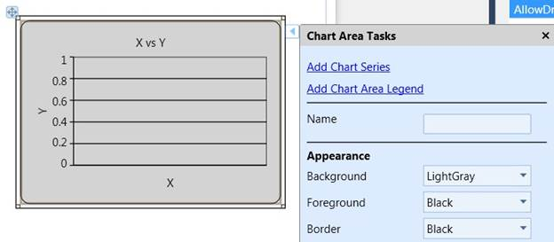
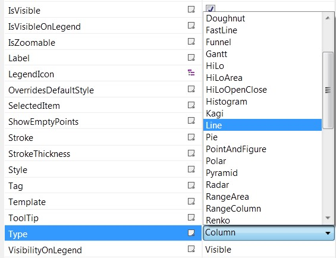
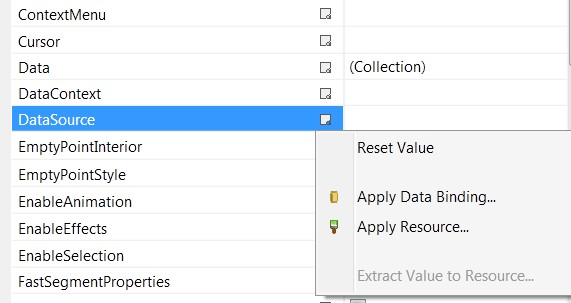
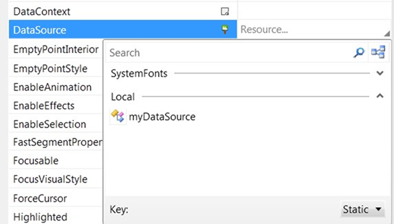
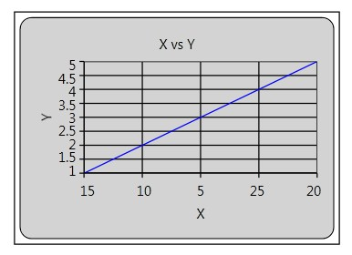
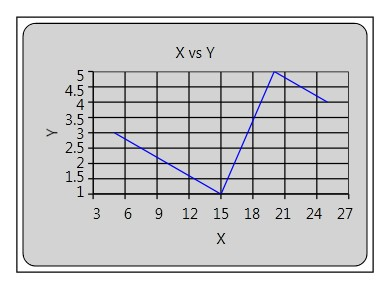
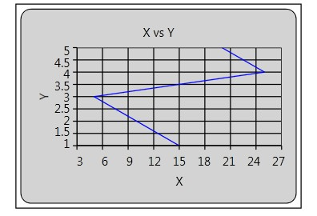

To create a chart series refer step 1 to 4 of Creating a Simple Chart in Creating a chart in Designer
1. Create your business object class in the C# file.
The following code illustrates creating your own business object which has X and Y values.
|
public class Data { public double X { set; get; } public double Y { set; get; } }
DataCollection is the observable collection of the Data. public class DataCollection : ObservableCollection<Data> { public DataCollection() { this.Add(new Data { X = 15, Y = 1 }); this.Add(new Data { X = 10, Y = 2 }); this.Add(new Data { X = 5, Y = 3 }); this.Add(new Data { X = 25, Y = 4 }); this.Add(new Data { X = 20, Y = 5 }); } }
|
2. Create an instance of the DataCollection in the Xaml file as below.
Add xmlns for the application.
|
xmlns:local="clr-namespace:DocumentationSample2010" |
3. Create instance of the DataCollection in the window's resource.
|
<Window.Resources> <local:DataCollection x:Key="myDataSource"/> </Window.Resources> |
4. Click the Chart Area.
 Note:
An expand button displays.
Note:
An expand button displays.
5. Click expand button.
Note: Chart Area smart tag
displays.
6. Click Add Chart Series.

Figure 20:Add Chart Series
7. The XAML Page gets updated as illustrated below.
|
<syncfusion:ChartArea> <syncfusion:ChartSeries /> </syncfusion:ChartArea> |
8. Right click the chart area.
Note: A context menu displays.
9. Click porperties.
Note: Property grid displays.
10. Select the chart type as required in the Type combobox.

Figure 21: Chart Type Combo Box
11. In the data source property, click on the advanced properties and select "Apply Resource".

Figure 22: Data Source Menu
12. Select myDataSource.

Figure 23: myDataSource
Note: The following output will be displayed in
XAMAL page.
|
<syncfusion:ChartSeries Type="Line" DataSource="{StaticResource myDataSource}"> |
13. Set the BindingPathX and BindingPathsY values in the Xaml, by using the following code.
|
<syncfusion:ChartSeries Type="Line" BindingPathX="X" BindingPathsY="Y" DataSource="{StaticResource myDataSource}"> |
Note: X value is bound to the primary axis
and Y value is bound the secondary axis.
14. When the sample runs the following output displays.

Figure 24: XY Value Bind to the Axis
Note: In the output we can see the X
values in the order as
it in set in the data source.
IsIndexed property enables the users to plot the data as it is in the data source.
Chart accepts the axis value as entered when this is set to true.
In chart series, we are having a property called IsIndexed which has the default value of True.
Set the IsIndexed value to false, by using the following code.
|
<syncfusion:ChartSeries IsIndexed="False" Type="Line" BindingPathX="X" BindingPathsY="Y" DataSource="{StaticResource myDataSource}"> |
When the code runs, the following output displays.

Figure 25: IsIndexed Set to False
Note: In the output we can see the X values
order as 5, 10, 15, 20, and 25.
But in our data source the order of the data are 15, 10, 5, 25, and 20.
To plot the data as it is in the data source, set IsSortData to false. Default this value is true.
Note: IsSortData is enabled when
IsIndexed is set to false.

Figure 26: IsSortData Set to False
Consolidate Code
Consolidate Code of the above mentioned step
|
<Window x:Class="DocumentationSample2010.Window1" xmlns="http://schemas.microsoft.com/winfx/2006/xaml/presentation" xmlns:x="http://schemas.microsoft.com/winfx/2006/xaml" Title="Window1" Height="324" Width="420" xmlns:syncfusion="http://schemas.syncfusion.com/wpf" xmlns:local="clr-namespace:DocumentationSample2010" xmlns:my="clr-namespace:System;assembly=mscorlib"> <Window.Resources> <local:DataCollection x:Key="myDataSource"/> </Window.Resources> <Grid> <syncfusion:Chart HorizontalAlignment="Left" Margin="69,34,0,0" Name="chart1" VerticalAlignment="Top" Height="205" Width="286"> <syncfusion:ChartArea Header="X vs Y"> <syncfusion:ChartArea.SecondaryAxis> <syncfusion:ChartAxis Header="Y" /> </syncfusion:ChartArea.SecondaryAxis> <syncfusion:ChartArea.PrimaryAxis> <syncfusion:ChartAxis Header="X" /> </syncfusion:ChartArea.PrimaryAxis> <syncfusion:ChartSeries Type="Line" IsIndexed="False" IsSortData="False" Interior="Blue" BindingPathX="X" BindingPathsY="Y" DataSource="{StaticResource myDataSource}"> </syncfusion:ChartSeries> </syncfusion:ChartArea> </syncfusion:Chart> </Grid> </Window> |
When the code runs, the following output displays
Figure 27: Chart Control with Data source